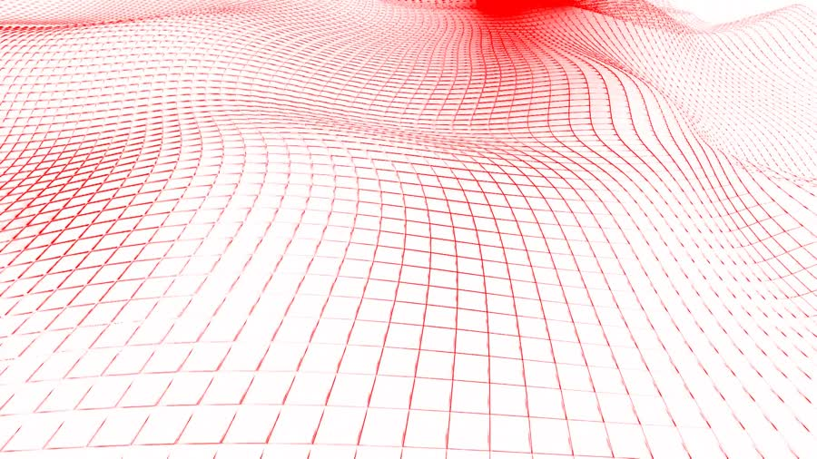
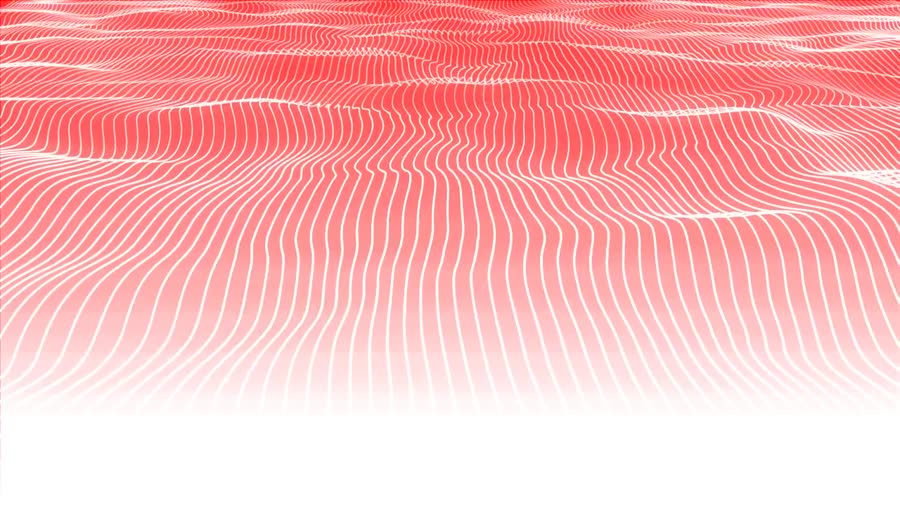
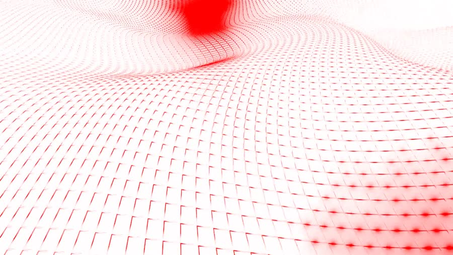
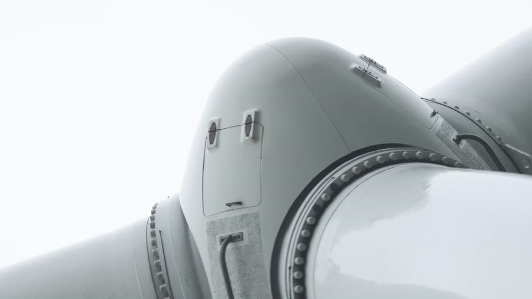
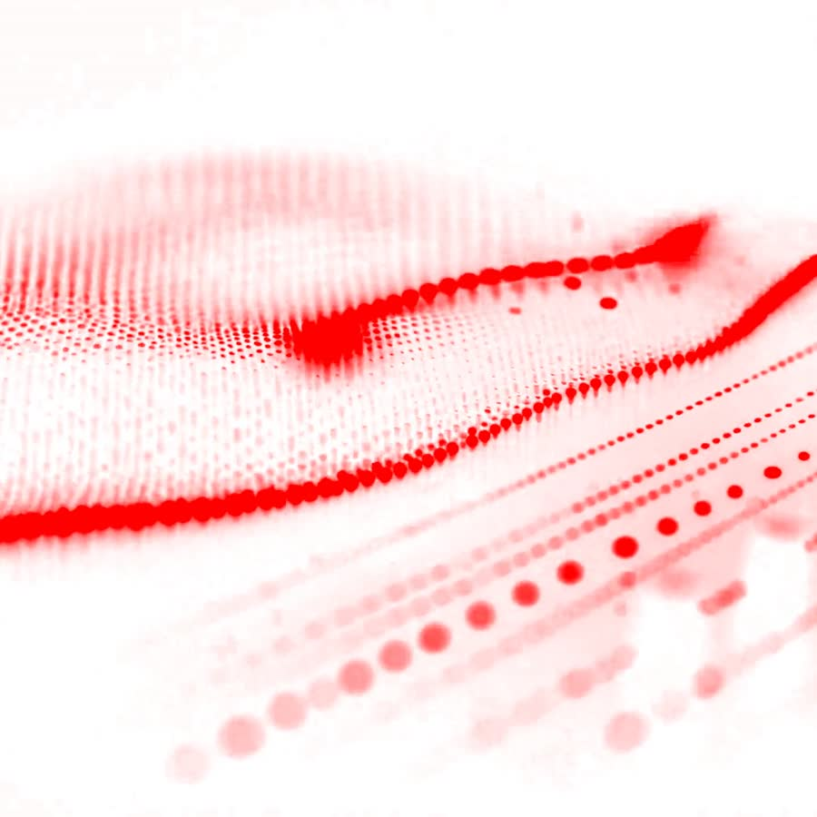

No hay tripulación. La nave existe para una sola tarea — llevar oxígeno a través del vacío, sin nada de más a bordo que lo que esa tarea requiere.
SPACIO² elimina lo que no es carga: sin cabinas, sin ventanas, sin espacio habitable. Cada metro cúbico del casco es tanque o estructura. La forma no es estilo — es la consecuencia directa de mover 2,4 millones de litros de oxígeno líquido a través del vacío interestelar, minimizando la sección expuesta a radiación y micrometeoritos.
Este estudio documenta esa lógica: superficies que existen porque tienen una función, un rojo que aparece solo donde señala algo activo, y un blanco que es en realidad la aleación de titanio-grafeno vista de cerca.




SPACIO² no tiene una parte "de diseño" y otra "de ingeniería". Son la misma decisión vista desde dos lados.
Cada generación del programa ARCA no rediseña la nave desde cero: afina lo que la anterior dejó sin resolver.
La propulsión de fusión pulsada cambió la pregunta: ya no era cuánto combustible cargar, sino cuánta carga útil se podía llevar en su lugar.

La primera nave del programa ARCA. Tripulada, con propulsión química y cabinas de control — la arquitectura clásica del transporte espacial, heredada de los primeros programas orbitales.
El objeto de este estudio. Primera generación autónoma: sin tripulación, con propulsión de fusión pulsada. La primera nave del programa ARCA en cruzar a menos de 32 años.
Hereda la propulsión autónoma de SPACIO², pero cambia la pregunta: no busca velocidad máxima, busca volumen. En fase de pruebas para rutas de carga múltiple.
Porque su navegación es autónoma: los sistemas de guiado y propulsión operan sin intervención humana, en vez de depender de una cabina de control. Esto libera todo el volumen del casco para carga de oxígeno.
Es la marca de la segunda generación del programa ARCA — cada salto de clase se expresa como una potencia, reflejando el alcance exponencial que gana la nave en cada generación.
SPACIO¹ era tripulada y usaba propulsión química. SPACIO² es autónoma, con propulsión de fusión pulsada — más del doble de velocidad de crucero y sin necesidad de soporte vital humano.
Es un compromiso entre tres problemas: sección expuesta a radiación, distribución del tanque de oxígeno, y disipación térmica. La curva no es estética — es la solución que satisface los tres a la vez.
En este estudio sí: lo usamos exclusivamente para señalar elementos activos o interactivos, igual que el rojo en la nave aparece en las luces de posición y las válvulas de carga — nunca como decoración.